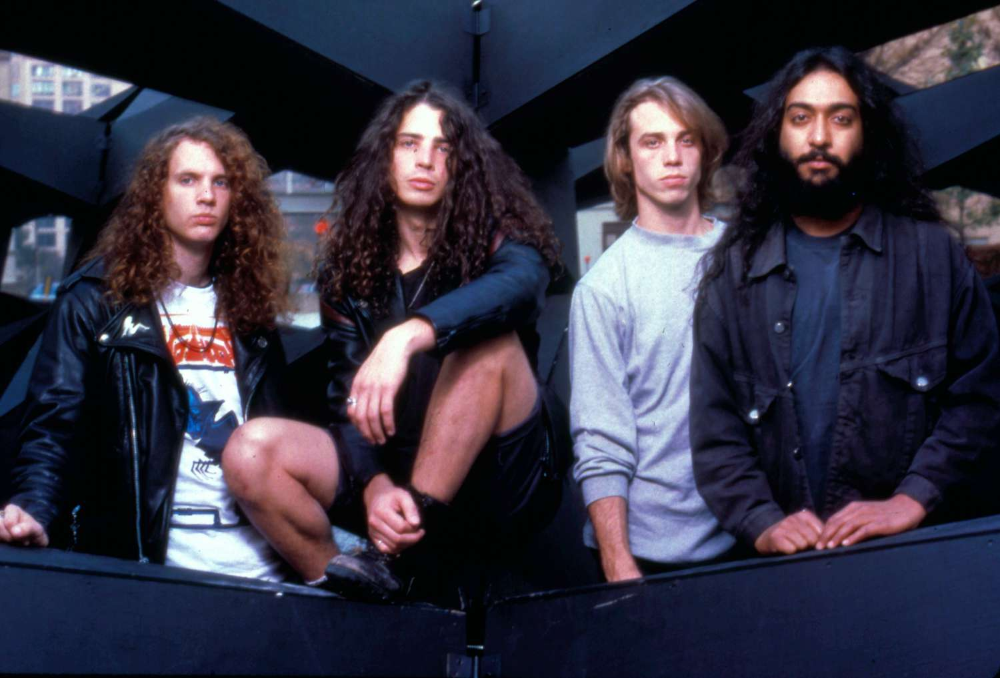

Un repaso por las agrupaciones que definieron una era musical.
Estas bandas no solo definieron el sonido del grunge, sino que también influyeron en generaciones futuras de músicos alrededor del mundo. Siendo parte de un moviento que perdurará por siempre en la historia y corazones de los que aman al Grunge.
Muchas de estas bandas surgieron de la misma escena de Seattle, compartiendo estudios, escenarios, e incluso integrantes. Fue una verdadera comunidad creativa que cambió la música para siempre.
